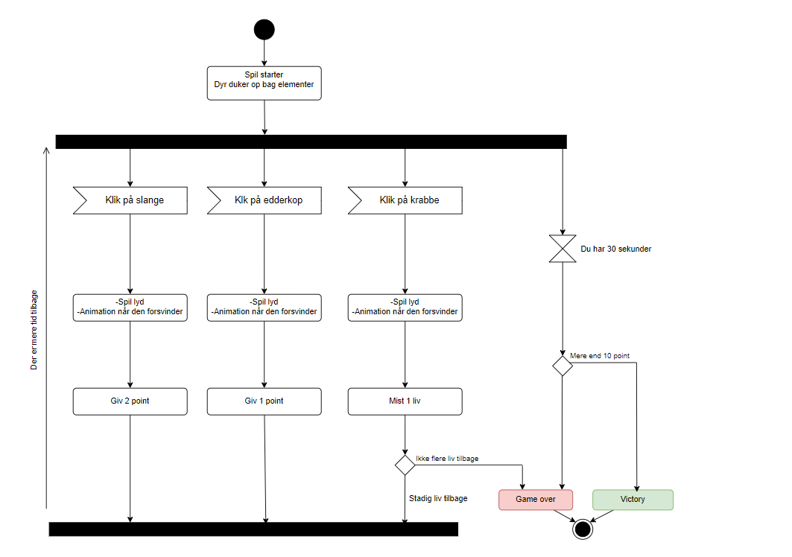
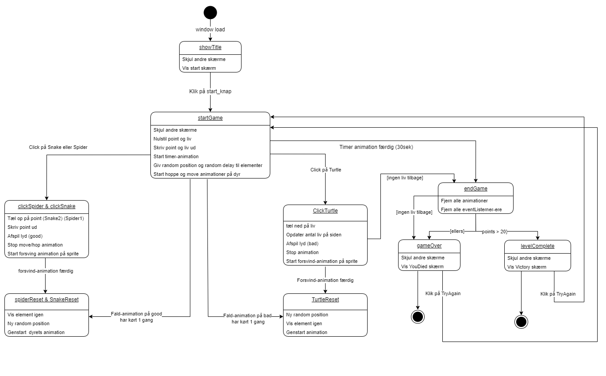

Teknik
Aktivitets-diagram
State Machine-diagram
Aktivitetsdiagram beskrivelse
Der er to “gode” elementer hvor én lyd spiller når man klikker dem og hvor man får henholdsvis 1 og 2 point. Der er én dårlig hvor man mister ét liv hvis man klikker på den, samt der bliver spillet en anden lyd. Og som tilføjelse er der et ekstra dårligt element der kun kommer én gang hvor man også mister liv. Og der kommer en forhinding forbi skærmen, man ikke kan klikke på, men blot er i vejen og distraherende.
Hvordan bevæger tingene sig? Scale in/hopper op/og transform (forskelligt for dyrene) når de dukker op, zoom ud og forsvinde når man ikke når at klikke og snurre rundt og ud når man rammer dem.
Hvordan du vil vise tid, point og liv? Klassiske konventioner. 3 hjerter for liv, et tal i bunden for point, og en søjle hvor tiden bliver vist med ændring af farven.
Hvordan taber og vinder man spillet (hvor mange point/liv)? Man vinder ved at score over 20 point på den tid man har (30 sek). Man taber ved at miste alle sine liv (3) eller løbe tør for tid uden at have scoret 20 point.
State Machine diagram beskrivelse
Her har jeg mit State Machine Diagram som er taget ud fra Diagram 1 med gode ting, og dårlige ting.
Jeg tilføjede senere nogle forstyrrende elementer som en krokodille, og en krabbe. Krabben hopper rundt, og rammer man den mister man ét liv. Den har sin egen funktion "clickCrab" der er næsten identisk med "clickTurtle" men uden en reset funktion da den kun dukker op én gang i spillet. Krokodillen kravler bare ind over skærmen og er i vejen så den er kun med i min StartGame og EndGame funktion.
For at jeg kunne lave en info knap i øverste højre hjørne fandt jeg mig frem til at jeg skulle bruge to ekstra funktioner - I hvert fald sådan jeg løste mit problem på. Der er nok en smartere løsning. Men jeg lavede en `clickStart` funktion som vist på State Machine diagrammet, og i den funktion kan man klikke på en infoknap der fører en til `infoScreen` funktionen, som viser min infoskærm, samt har en exitknap der så fører til en ny funktion, funktion `backToStart` som fører en tilbage til `clickStart` funktionen. Da det ikke virkede for mig på en anden måde.
I alt endte jeg med at have 15 funktioner. En random-number-generator funktion, en startgame funktion og en endgame funktion. Syv funktioner på mine figurer.
Tre funktioner for at vise startskærm og infoskærm og gå frem og tilbage mellem dem.
Og til sidst en gameover funktion og en level complete funktion der viser de repræsentative skærme og viser en try again knap der går tilbage til startgame funktion.